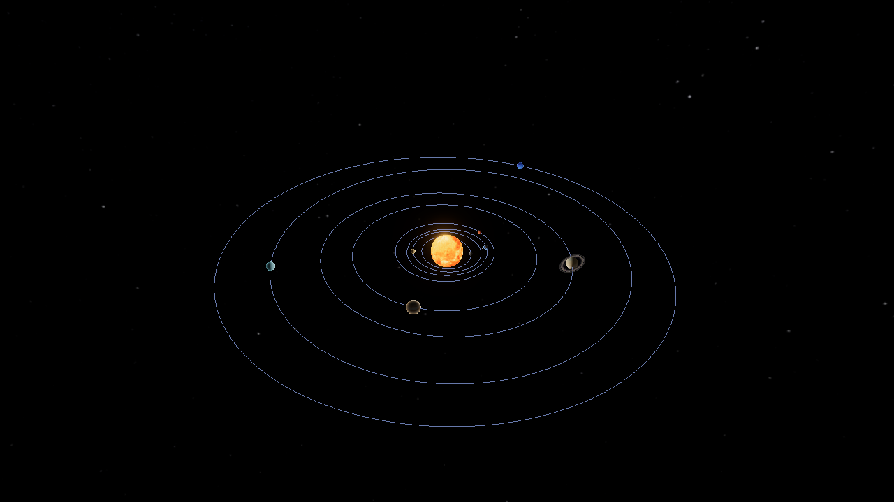

SłońceMerkuryWenusZiemiaMarsJowiszSaturnUranNeptun
Orbitka
Skala uproszczona
Dane orbit, z których liczymy ruch planet, są dokładne dla lat
1800–2050. Poza tym zakresem pozycje
są szacunkowe.
4 października 205410 lat/s
1 dzień10 dni1 mies.1 rok